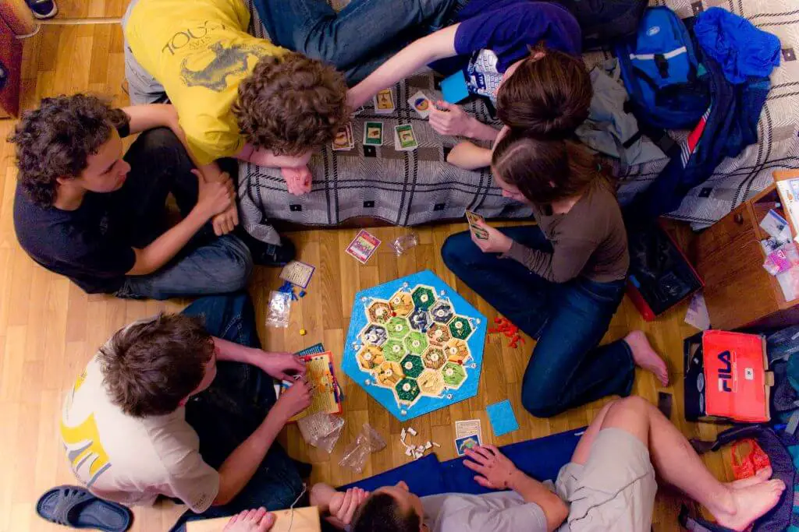
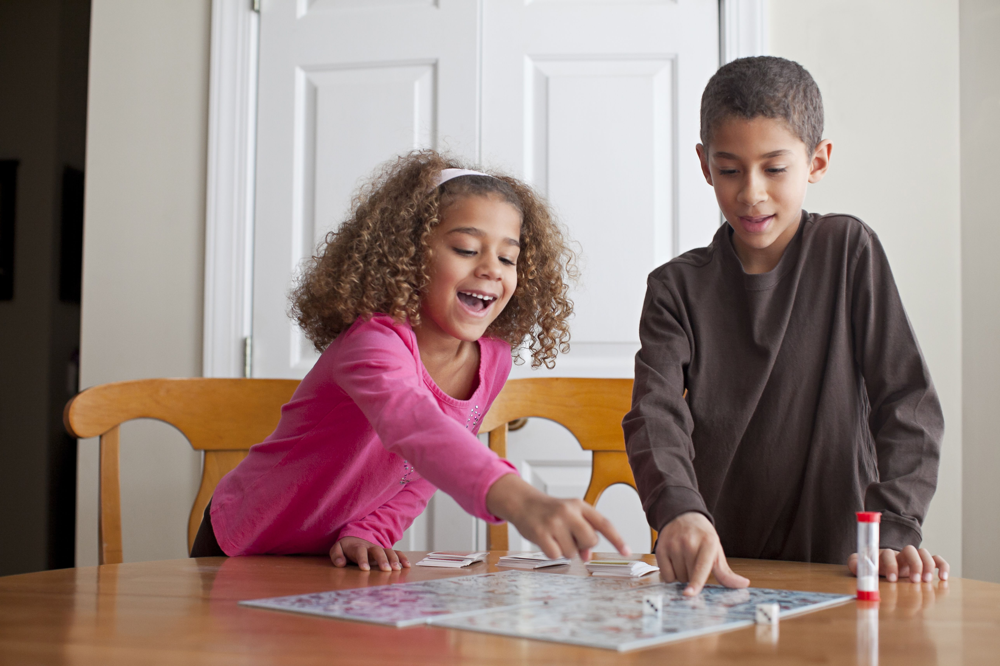

Playing board games is beneficial, this includes:
1)Creating connection with friends and family
Board games bring families and friends of all ages together to connect, strategize, compete, and have fun. There is more of a social component to playing board games than you may have considered. The very foundation of this activity is cooperation, as it requires players to engage with each other through teamwork. Playing board games is the ideal way to spend time with nice company and strengthen bonds with other people.

2)Reducing stress
Having fun while playing board games helps get your mind off of negative things going on in your life that may be leading to stress. Focusing on escaping into the world of a board game rather than your job, money, or whatever other troubles you’re facing is an effective method for reducing stress and allowing yourself to have the break that you need.

3)Increasing confident
If you are someone who could use a boost in confidence, board games could help you more than you realize. Not only will playing board games make socializing easier, it will also help you become more self-assured.Each time you make a decision while playing a board game, you’re building your faith in your own abilities. Also, when you develop a winning strategy, you’ll start to perceive yourself as being capable, and an intelligent person who can make an effective plan.
